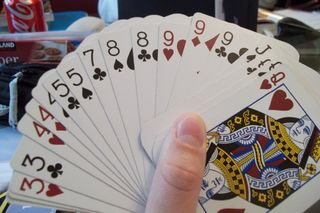
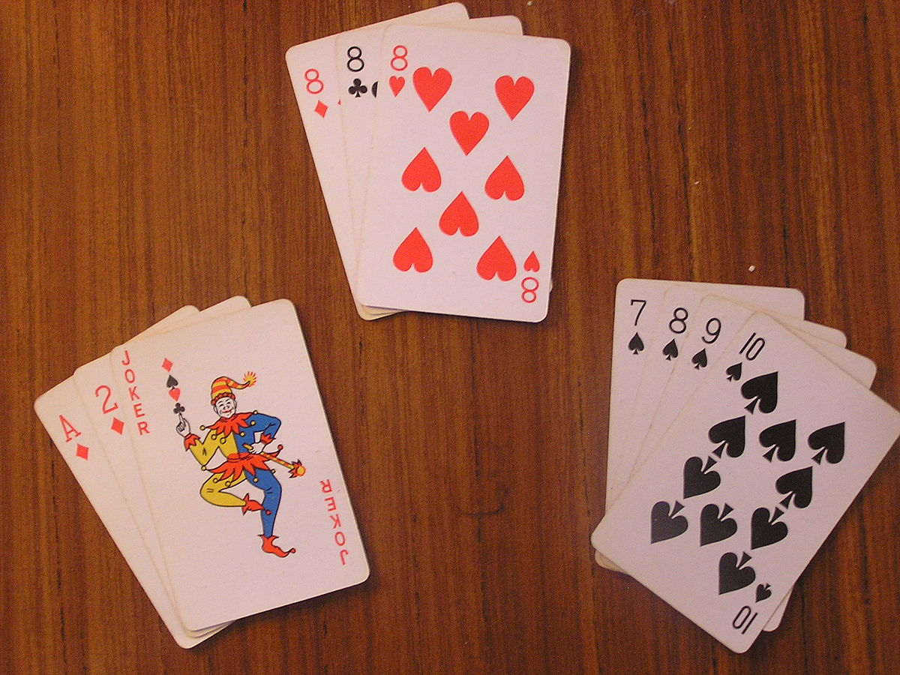
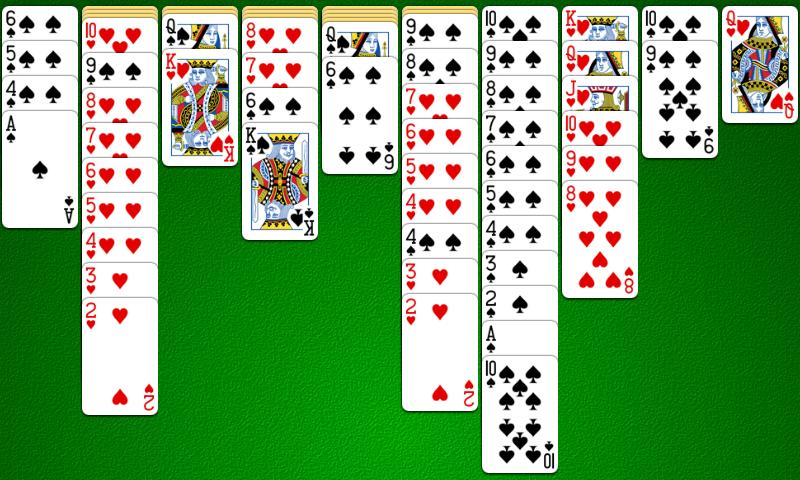
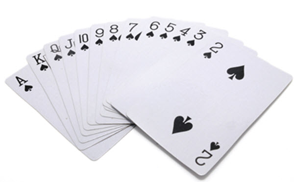
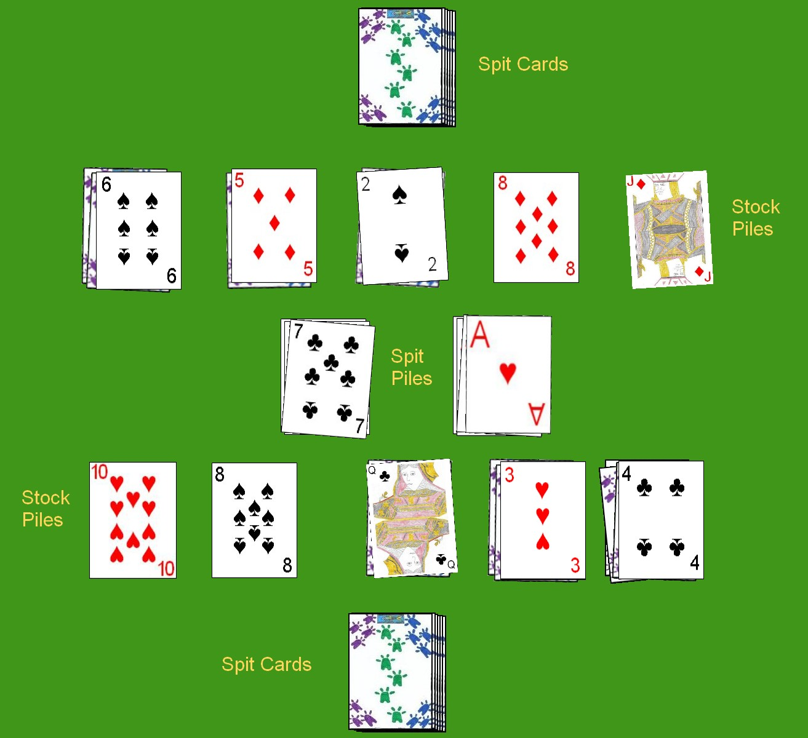
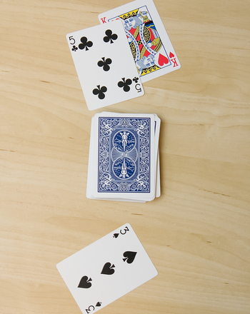
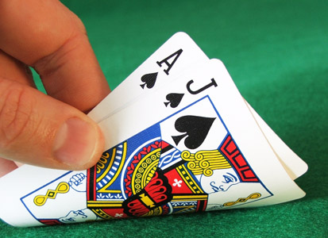
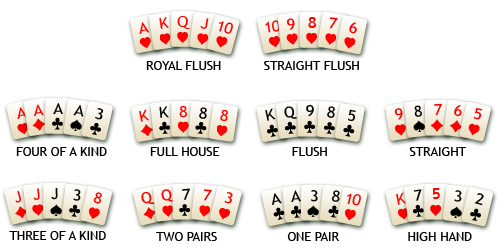

IdeaCloudIdeaCloud
IdeaCloudIdeaCloud| Table of Contents |
|---|
| Games that need a standard deck of cards |
| Games that need a deck of cards and poker chips |
| Games with a special deck of cards |
| Other Categories | ||||||
|---|---|---|---|---|---|---|
| Board Games | Card Games | Activities | Arts & Crafts | Productivity | Something New | |
If you don't have a deck of cards you can purchase one here!
Read in-depth rules here or watch a how-to YouTube video here

Read in-depth rules here or watch a how-to YouTube video here

Read in-depth rules here or watch a how-to YouTube video here

Read in-depth rules here or watch a how-to YouTube video here

Read in-depth rules here or watch a how-to YouTube video here

Read in-depth rules here or watch a how-to YouTube video here

Read in-depth rules here or watch a how-to YouTube video here

Read in-depth rules here or watch a how-to YouTube video here

You can buy a set of poker chips here
Read in-depth rules here or watch a how-to YouTube video here

Read in-depth rules here or watch a how-to YouTube video here

You can buy a set of uno cards here here